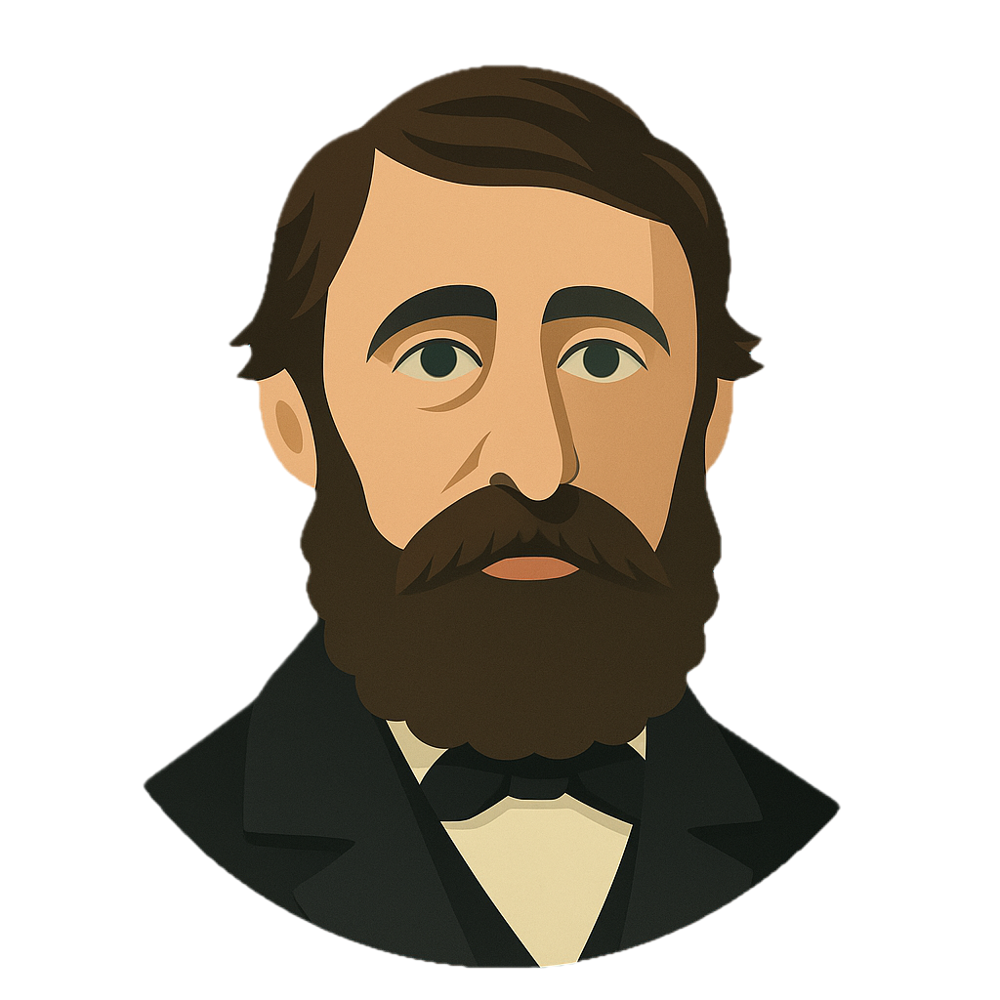

Voices at the Pond
A game about Henry David Thoreau's experiment at Walden
"I went to the woods because I wished to live deliberately..."
A game about Henry David Thoreau's experiment at Walden
"I went to the woods because I wished to live deliberately..."
0 / 8 species collected
Press SPACE to cast your line
Press ESC to resume

1817 - 1862
"I went to the woods because I wished to live deliberately"
Born David Henry Thoreau in Concord, Massachusetts, he later reversed his name to Henry David. He graduated from Harvard College in 1837, where he studied rhetoric, classics, philosophy, mathematics, and science. Despite his education, he rejected conventional career paths, choosing instead to become a philosopher, naturalist, and writer.
At age 28, Thoreau built a small cabin on land owned by his mentor Ralph Waldo Emerson near Walden Pond. For two years, two months, and two days, he lived simply, deliberately, and self-sufficiently. He grew beans, observed nature, read classics, wrote in his journal daily, and questioned the assumptions of American life.
His cabin cost $28.12½ to build—a fraction of what his neighbors spent on houses. This wasn't mere frugality; it was a philosophical experiment about the relationship between cost and life itself.
In July 1846, Thoreau was arrested for refusing to pay his poll tax in protest of slavery and the Mexican-American War. He spent one night in jail (his aunt paid the tax). This experience became "Civil Disobedience" (1849), one of history's most influential essays on nonviolent resistance.
His principle was simple but radical: an unjust law is no law at all, and a just person's place under an unjust government is in prison.
Core Beliefs:
Historical Impact:
After Walden, Thoreau returned to Concord, living with his family while working as a surveyor, lecturer, and writer. He became increasingly radical in his opposition to slavery, helping fugitive slaves escape via the Underground Railroad and defending John Brown's raid on Harpers Ferry.
He died of tuberculosis at age 44 on May 6, 1862. His last words were reportedly "moose" and "Indian"—fitting for a man who loved wilderness. At his funeral, his friend Emerson said: "The country knows not yet, or in the least part, how great a son it has lost."
"I learned this, at least, by my experiment: that if one advances confidently in the direction of his dreams, and endeavors to live the life which he has imagined, he will meet with a success unexpected in common hours."— Henry David Thoreau, Walden